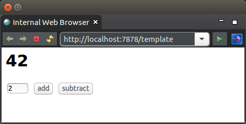

This tutorial looks at using JavaScript within WoOF templates and interacting with the WoOF server by AJAX (by both HTTP parameters and JSON).
To focus on JavaScript and AJAX, the below simple application will undertake adding or subtracting from a number. While this can be accomplished client-side with JavaScript, the tutorial demonstrates AJAX by sending the values to the WoOF server to undertake the calculations.
The below is the HTML and JavaScript for the page. While production applications should use a JavaScript framework (e.g. jQuery) to handle issues such as cross browser differences, the tutorial will use raw JavaScript to show it is JavaScript framework agnostic.
The reason that WoOF may use any JavaScript framework is that it does not interpret the web page contents. WoOF treats the content of a web page as text, providing only the necessary tag replacements. In the case below, WoOF provides the URLs for the AJAX calls. This means any JavaScript code (whether raw or part of a framework) may be included in the WoOF templates. It even means that WoOF templates can be used for other content types such as XML. The focus of this tutorial will be on including JavaScript within HTML web pages.
<html>
<head>
<script type="text/javascript">
function addition() {
var numberOne = document.getElementById("result").innerHTML
var numberTwo = document.getElementById("value").value
doAjax( { url: "#{addition}"
, contentType: "application/x-www-form-urlencoded"
, payload: "numberOne=" + numberOne + "&numberTwo=" + numberTwo
, handler: function(response) { document.getElementById("result").innerHTML = response; }
})
}
function subtraction() {
var numberOne = document.getElementById("result").innerHTML
var numberTwo = document.getElementById("value").value;
doAjax( { url: "#{subtraction}"
, contentType: "application/json"
, payload: JSON.stringify({numberOne: numberOne, numberTwo: numberTwo})
, handler: function(response) {
document.getElementById("result").innerHTML = JSON.parse(response).result
}
})
}
function doAjax( request ) {
var ajax = new XMLHttpRequest();
ajax.open("POST", request.url, false)
ajax.setRequestHeader("Content-type", request.contentType)
ajax.onreadystatechange = function() {
if (ajax.readyState == 4) {
request.handler.call( request, ajax.responseText )
}
}
ajax.send( request.payload )
}
</script>
</head>
<body>
<h1 id="result">1</h1>
<p><input id="value" type="text" value="1" size="4" />
<input type="button" value="add" onclick="addition()" />
<input type="button" value="subtract" onclick="subtraction()" /></p>
</body>
</html>
Different payload types (HTTP parameters and JSON) are used for the respective AJAX requests. This is to demonstrate in the next sections how WoOF handles each payload type.
The handling HTTP parameters in the AJAX request is very similar to handling HTML form submissions. The difference is that the default behaviour of re-rendering the template's content is to be avoided. To avoid re-rendering the template's content the below annotation is added to the servicing method to flag to not re-render the template.
public class TemplateLogic {
@Data
@HttpParameters
public static class AdditionRequest implements Serializable {
private static final long serialVersionUID = 1L;
private String numberOne;
private String numberTwo;
}
@NotRenderTemplateAfter
public void addition(AdditionRequest request, ServerHttpConnection connection) throws IOException {
// Add the numbers
int result = Integer.parseInt(request.getNumberOne()) + Integer.parseInt(request.getNumberTwo());
// Return the result
connection.getResponse().getEntityWriter().write(String.valueOf(result));
}
To handle JSON content in both the request and response, the JSON content is mapped to Java Objects. The below demonstrates the:
@Data
@HttpObject
public static class SubtractionRequest implements Serializable {
private static final long serialVersionUID = 1L;
private String numberOne;
private String numberTwo;
}
@Data
public static class JsonResponse {
private final String result;
}
@NotRenderTemplateAfter
public void subtraction(SubtractionRequest request, ObjectResponse<JsonResponse> response) throws IOException {
// Subtract the numbers
int result = Integer.parseInt(request.getNumberOne()) - Integer.parseInt(request.getNumberTwo());
// Return the result
response.send(new JsonResponse(String.valueOf(result)));
}
}
The underlying implementation of JSON to Java Object mapping is via Jackson. Please see their documentation regarding additional annotations available to Java Objects to fine tune mapping of JSON to/from Java Objects.
You will notice in the JSON example that there is no mention of JSON. The reason is that the code is agnostic to the underlying wire format and therefore re-usable for say receiving / sending XML.
To integrate your own wire formats provide implementations of the following services:
The following unit tests manually undertake the AJAX calls to the WoOF server and verifying the correct responses.
@ExtendWith(OfficeFloorExtension.class)
public class JavaScriptAppTest {
@RegisterExtension
public HttpClientExtension client = new HttpClientExtension();
@Test
public void testHttpParameters() throws IOException {
String response = this.doAjax("addition", "application/x-www-form-urlencoded", "numberOne=2&numberTwo=1");
assertEquals("3", response, "Incorrect response");
}
@Test
public void testHttpJson() throws IOException {
String response = this.doAjax("subtraction", "application/json",
"{ \"numberOne\" : \"3\", \"numberTwo\" : \"1\" }");
assertEquals("{\"result\":\"2\"}", response, "Incorrect response");
}
private String doAjax(String link, String contentType, String payload) throws IOException {
HttpPost post = new HttpPost("http://localhost:7878/template+" + link);
post.addHeader("content-type", contentType);
post.setEntity(new StringEntity(payload));
HttpResponse response = this.client.execute(post);
String entity = EntityUtils.toString(response.getEntity());
assertEquals(200, response.getStatusLine().getStatusCode(), "Should be successful: " + entity);
return entity;
}
The next tutorial looks at sectioning the template.